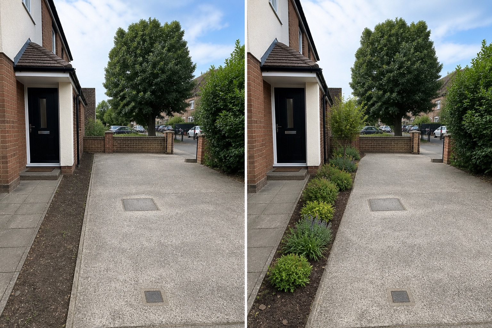

Keep hard surfaces untouched
The visual change stays inside the existing soil edge instead of inventing a narrower driveway.
Preserve vehicle movement, pedestrian access, visibility, utility covers, drainage, and the public edge. Use only the existing soil margin for a restrained visual concept; surface changes and traffic-related decisions need site-specific design.
Editorially reviewed August 14, 2026.
This AI-generated comparison is visual inspiration, not a measured plan, specification, safety assessment, cost estimate, local approval, plant recommendation, or construction guarantee.

The visual change stays inside the existing soil edge instead of inventing a narrower driveway.
Planting remains visually restrained where drivers and pedestrians need open views.
A taller mass sits back from the street, door, and utility covers rather than at the busiest corner.
The concept keeps the driveway and path surfaces, curb, entrance, wall, street view, utility covers, drainage, levels, and turning area. It does not reduce hard surface, relocate access, hide vehicles, or claim compliant visibility.
Measure the pedestrian route, door and gate swings, steps, vehicle movement, sightlines, lighting, deliveries, and the space needed to enter comfortably.
Locate meters, covers, cables, drainage, bins, neighboring access, and ownership lines. Keep inspection and maintenance points reachable.
Check views from the street and doorway, night visibility, runoff, litter, wind, and seasonal shade before changing planting or screens.
Confirm permissions, visibility rules, surface requirements, plant suitability, mature size, maintenance, and any contractor or specialist input locally.
Avoid planting into visibility zones, narrowing pedestrian access, covering utilities, altering runoff, or assuming roots and vehicles can coexist. Stop for driveway geometry, dropped curbs, drainage, excavation, utilities, retaining, lighting, or local transport and planning requirements.
First map sightlines, doors, vehicles, pedestrians, utilities, runoff, heat, and maintenance; then verify locally suitable species and mature size.
That is a site and access decision, not an image edit. Confirm maneuvering, parking, drainage, surfaces, permissions, and local requirements first.
Keep the travel and walking surfaces unchanged, maintain clear sightlines and covers, and choose a restrained edge that can be reached safely for upkeep.
Upload a level, wide photo to compare restrained concepts before making physical changes.
AI-generated visualizations are concepts. Verify measurements, conditions, drainage, access, structure, utilities, local rules, product information, plant suitability, and professional requirements before buying or building.